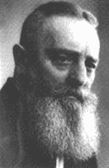

They called me deranged. The hope is that they are right. It is of no greater import if another fool wander this Earth. But if I am right and the science is wrong - then may the Lord God have mercy on mankind. |
Viktor Schauberger |
| welcome to |
the VORTEX WORLD |
of Viktor Shauberger |
|
This site is dedicated to the Austrian water wizard Viktor Schauberger's work and ideas. The own work and interpretations of Viktor Schauberger's writings made by the Malmö-group will also be presented on this site. |
